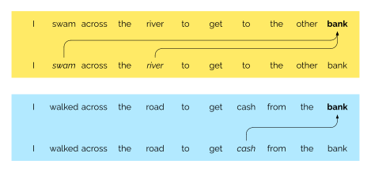

Machine Learning with Economic and Financial Applications
Lecture 6: Natural language processing and LLMs
Adrian Adermon
2025-05-19
Recurrent neural network
Structure of an RNN
Single hidden layer, $K$ hidden units $$A_{\ell k} = g \left ( w_{k0} + \sum_{j=1}^p w_{kj} X_{\ell j} + \sum_{s=1}^K u_{ks} A_{\ell-1,s} \right )$$ $$O_\ell = \beta_0 + \sum_{k=1}^K \beta_k A_{\ell k}$$Recurrent neural network
Challenges with text as data
The restaurant refused to serve me a ham sandwich because it only cooks vegetarian food. In the end, they just gave me two slices of bread. The ambiance was just as good as the service.
- Large input: 37 ⨉ 1024 = 37,888
- Input can differ in length
- Ambiguous syntax
Attention
- Interpretation depends on context
- Attention is sequence-specific
Training a decoder
Training input → Target value
"I swam across the river to get to the other bank"
I swam across the river to get to the other bank
I swam across the river to get to the other bank
I swam across the river to get to the other bank
I swam across the river to get to the other bank
I swam across the river to get to the other bank
I swam across the river to get to the other bank
I swam across the river to get to the other bank
I swam across the river to get to the other bank
I swam across the river to get to the other bank
Dot-product self-attention
Long-distance attention

Two attention heads

Heads specialize